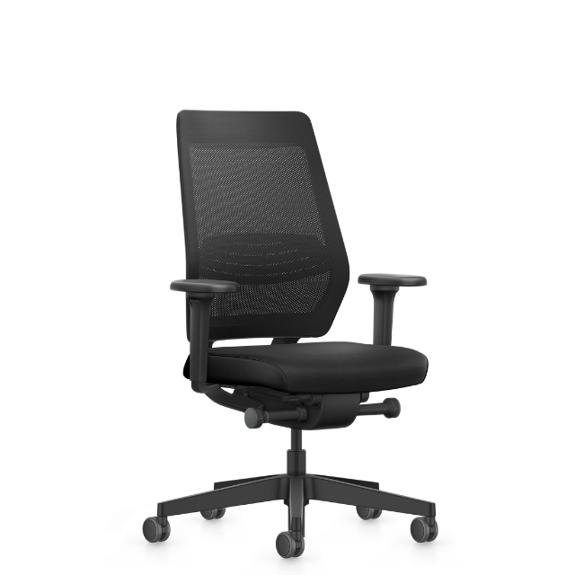

Ergonomiegids
Ergonomische instelmogelijkheden
Een nieuwe bureaustoel is een investering in je eigen gezondheid. Hier vind je een korte uitleg over de verschillende mogelijkheden van een ergonomische bureaustoel en het nut van deze technieken.
Normen
Over instelmogelijkheden
Een ergonomische bureaustoel is instelbaar op jouw lichaamsverhoudingen, zodat de stoel optimale ondersteuning biedt aan jouw natuurlijke houding en bewegingen. De NEN-EN1335-norm bepaalt de minimale ergonomische eisen waaraan bureaustoelen in Europa moeten voldoen.
Stoelen met de NPR-normering gaan een stap verder: ze bieden een ruimere instelbaarheid en meer ergonomische technieken, waardoor ze ook beter inspelen op kleinere of langere lichaamsbouw. Zo zijn de armleggers dichter op elkaar te plaatsen voor een slank postuur en is de zithoogte extra hoog instelbaar, ideaal voor de gemiddelde Belg of Nederlander.
Rugleuning & zitting
Synchroontechnieken
Bij een synchroontechniek kantelen de rugleuning én de zitting gelijktijdig mee naar achteren, zodat het bekken in elke positie optimaal ondersteund blijft.
| Techniek | Beschrijving |
|---|---|
| Vergrendelbare synchroon | Zet de rugleuning vast in de gewenste hoek. |
| Gewichtsregeling | Pas de tegendruk aan jouw lichaamsgewicht en kracht aan. |
| Autolift | De tegendruk past zich automatisch aan, zonder manuele afstelling. Handig bij meerdere gebruikers. |
| Autofit | Automatische gewichtsregeling met optionele handmatige bijregeling. |
| BodyFloat | De zitting zakt en schuift vloeiend mee naar achteren, zonder dat de voorkant omhoogkomt. Maximaal comfort en vrijheid voor de benen. |
Zithoek
Zitneigtechnieken
Met de zitneigverstelling wordt de hoek van de zitting ingesteld. Een licht voorwaartse helling (zitinclinatie) houdt het bekken rechtop, vergroot de hoek tussen bovenbenen en romp, en vermindert de druk op de tussenwervelschijven. Dit is vooral nuttig bij beeldschermwerk.
| Techniek | Beschrijving |
|---|---|
| Onafhankelijke zitneigverstelling | Handmatig in te stellen op horizontaal of -4°. |
| Dynamische zitneigverstelling | Past zich automatisch aan het lichaamsgewicht en de druk van de bovenbenen aan en stimuleert zo actiever zitgedrag (bijv. Smart Motion Technology op de Interstuhl Vintage-modellen). |
| FlexTech | Voegt zijdelingse bewegingsvrijheid toe via microbewegingen, wat de doorbloeding bevordert en de rompspieren versterkt. |
Exclusief bij de Interstuhl Pure
Smart Spring Technology
De Smart Spring Technology is een innovatief veerelement dat zich automatisch aanpast aan elke beweging: achterover, voorover én zijdelings. Anders dan bij een klassieke synchroon of zitneigverstelling werkt het als een flexibel frame doorheen de volledige stoel, waardoor je continu contact houdt met de rugleuning zonder ingeperkt te worden.
Het resultaat: een volledig natuurlijke, actieve zithouding met minder druk op bekken en wervelkolom, zonder handmatige instellingen. De Smart Spring vervangt én upgradet zowel de synchroontechniek als de dynamische zitneigverstelling.
Bekijk de Pure van Interstuhl
Bovenbenen
Zitdiepteverstelling
Met de zitdiepteverstelling schuift het zitkussen voor- of achteruit, afgestemd op de lengte van je bovenbenen. Correct ingesteld verdeelt de stoel je gewicht optimaal en voorkomt hij afknelling van de bloedvaten achter de knie.
Vuistregel: er past één gebalde vuist tussen je knieholte en de rand van de zitting.
| Type | Beschrijving |
|---|---|
| Uitschuifbaar | Meest voorkomend. De zitting schuift naar voren vanaf de rugleuning, ideaal voor langere benen. |
| Inschuifbaar | De zitting schuift onder de rugleuning door, waardoor er achteraan geen opening ontstaat. Geschikt voor kortere benen. |
| ASTIV / uitrolbaar | Het zitoppervlak zelf wordt verlengd via een geïntegreerde uitrol. |
Doorbloeding
Zithoogteverstelling
Voor een optimale verdeling van je gewicht over het zitoppervlak en een ongehinderde doorbloeding naar de benen is ook de zithoogte van belang. De voeten horen volledig op de grond te rusten, waarbij de knieën een hoek van 90° maken.
Heb je een in hoogte verstelbaar bureau, dan kan je de zithoogte perfect aan de lengte van je onderbenen aanpassen.
Heb je een bureau met een vaste hoogte, dan raden we aan eerst de ergonomische armleggers in te stellen en vervolgens de zithoogte aan te passen, zodat de armleggers op gelijke hoogte met het bureau staan. Juist ingestelde armleggers zijn van groter ergonomisch belang dan de exact juiste zithoogte.
Tip: komen je voeten door de zithoogte boven de vloer uit? Gebruik dan een voetensteun, zodat je benen niet afknellen tegen de rand van de zitting.
Onderrug
Lendensteun
De rugleuning en de lendensteun ondersteunen je rug, zodat je niet voorovergebogen gaat zitten. De lendensteun dwingt geen holling van je rug af, maar volgt juist je natuurlijke S-curve. Zo voorkom je een voorovergebogen houding en creëer je geen extra belasting op je tussenwervelschijven.
| Variant | Beschrijving |
|---|---|
| Vaste lendensteun | Een voorgevormde bolling in de onderzijde van de rugleuning. Vaak kan deze alsnog in hoogte worden ingesteld door de rugleuning in hoogte af te stemmen. |
| In hoogte instelbaar | Afzonderlijk van de rugleuning in te stellen. Eenvoudig te verschuiven en weer vast te zetten met een draaiknop of kliksysteem. |
| In (hoogte en) diepte verstelbaar | Speelt verfijnder in op de natuurlijke holling voor een optimale ondersteuning van het volledige rugoppervlak. De diepte is bijvoorbeeld in 2 standen instelbaar, traploos uit te duwen met een draaiknop of zelfs met luchtkussens op te pompen, zoals de AirPressure-techniek van Interstuhl. |
Nek & schouders
Armleuningen
Armsteunen worden vaak onderschat, terwijl ze een sleutelrol spelen bij het voorkomen van nek- en schouderklachten. Verkeerd ingestelde armleggers leiden tot opgetrokken schouders of naar beneden geforceerde armen: beide veelvoorkomende oorzaken van nekpijn.
Het aantal instelmogelijkheden wordt uitgedrukt in dimensies (1D–4D):
| Dimensie | Instelbaar in |
|---|---|
| 1D | Enkel hoogte |
| 2D | Hoogte en breedte |
| 3D | Hoogte, breedte en diepte |
| 4D | Hoogte, breedte, diepte én zwenkbaar opdek |
| 4D-NPR | Hoogte, breedte, diepte én 360° draaibaar opdek |
Achteroverleunen
Hoofdsteun
Een hoofdsteun geeft de nodige steun tijdens het (ver) achteroverleunen. De nekspieren worden minder belast en je ervaart minder beperking van je ademhaling.
In een rechtopzittende positie heeft een hoofdsteun geen grote meerwaarde, in tegenstelling tot wat soms beweerd wordt. Leun je geregeld achterover, dan biedt een hoofdsteun zeker extra comfort, vooral een in hoogte en/of diepte verstelbare hoofdsteun.
In de praktijk
Enkele van onze populaire modellen

Every Plus | net
Bekijk product
Every NPR - hoge rug | net
Bekijk product
Joyce NPR | 3D-net
Bekijk productHulp nodig bij het instellen?
Kom langs in onze toonzaal in Bierbeek. Onze ergonomie-experts stellen je stoel samen met jou correct in.